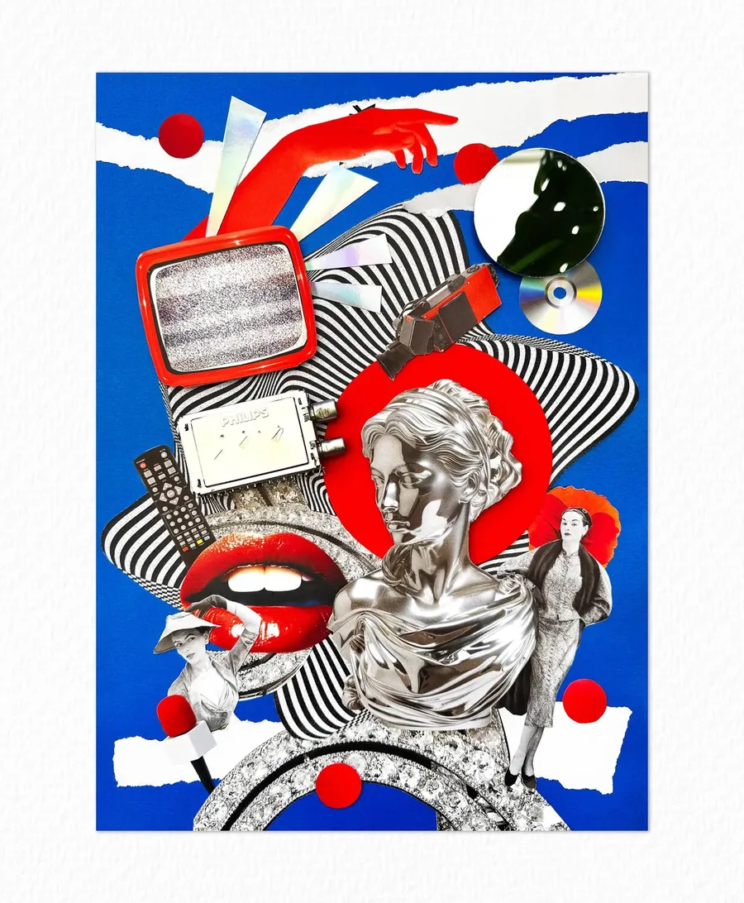
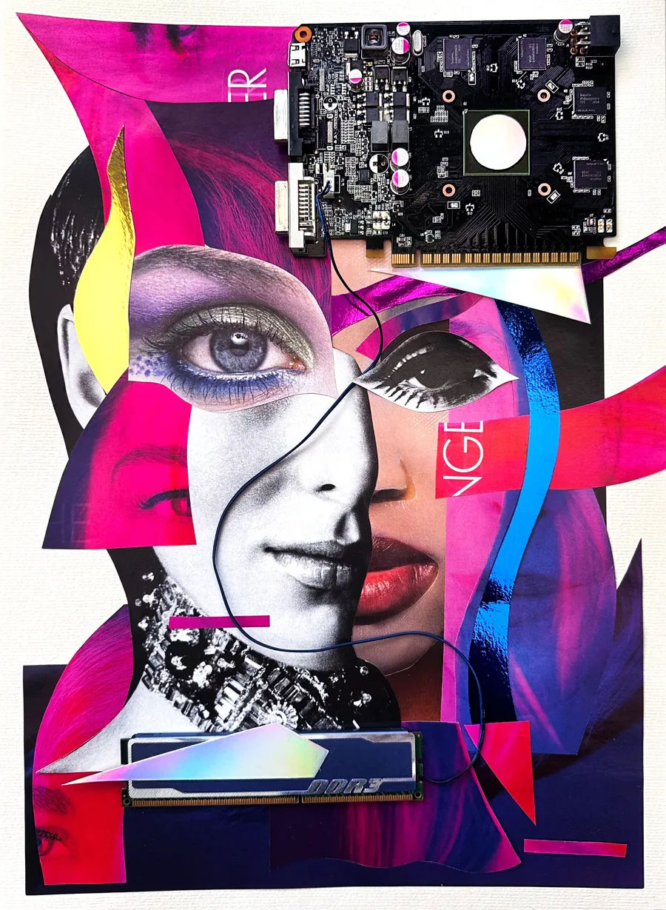
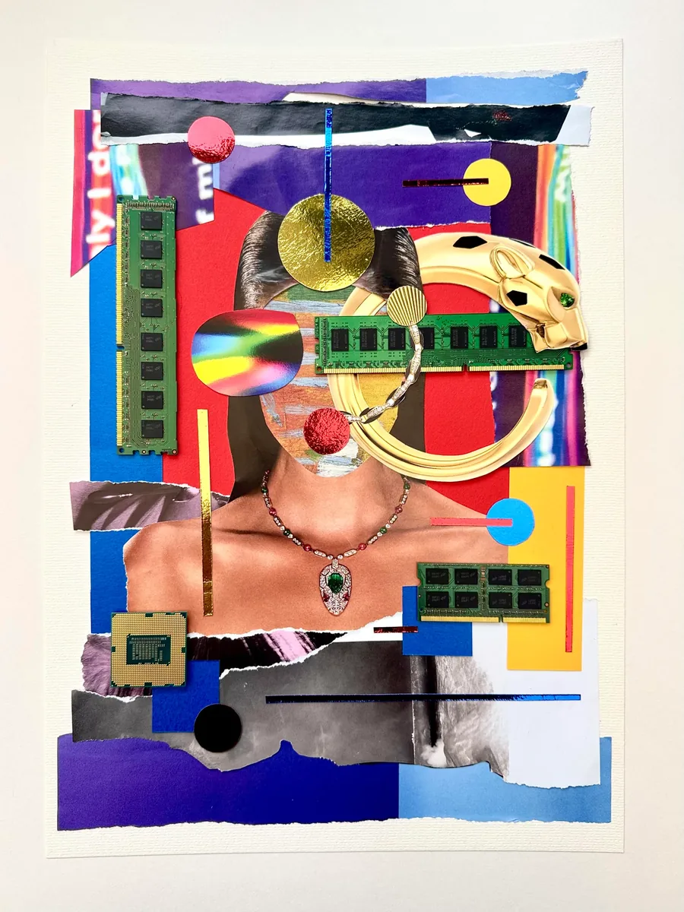
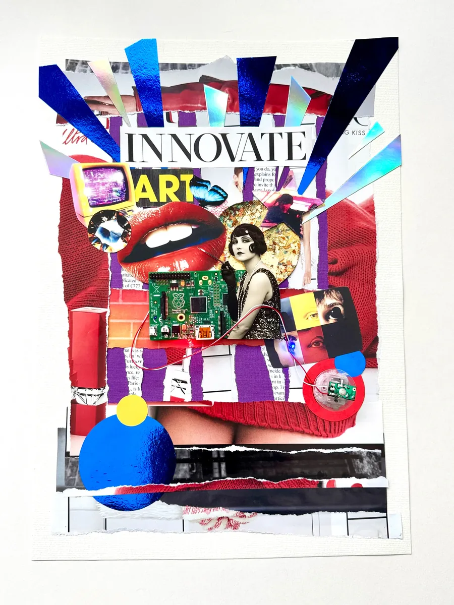
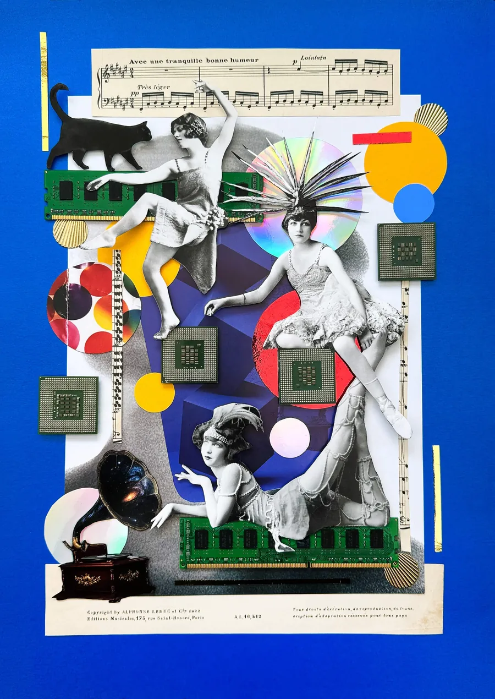

Irina Csapo
My practice investigates digital culture through analogue means. Every piece is cut, layered and assembled by hand, from vintage printed matter and the parts of obsolete machines.
-

Silver Screen Queen January 2026 -

Fragmentation December 2025 -

Electric Eve November 2025 -

Electric Muse November 2025 -

Kilobyte Cabaret September 2025
Irina Csapo
A UK-based multidisciplinary artist and designer, working in analogue collage and mixed media.
Materials
Vintage printed matter, glossy fashion print, mirror, and e-waste ephemera: circuit boards, memory modules, and obsolete computer and media hardware.
Works are A3, framed to 42 × 52 cm.
Practice
I work with hand-cut collage and mixed media as a way to peel myself away from the multitude of screens I am staring into every day: my work computer, my home computer, my phone, my TV.
Vintage magazines, printed ephemera and fragments of obsolete electronic technology were designed to be fast, efficient and replaceable. In my hands they become slow, deliberate treasures.
Devices that once symbolised innovation quickly become waste, yet they keep a strange visual richness: gold contacts, geometric circuitry, manufactured beauty. I treat them as cultural relics rather than discarded objects.
Every piece is constructed entirely by hand, without digital shortcuts. No two works are alike.
Thanks for being here!
The work is for sale and I take commissions. For prices, availability or anything else, write to me at hello@irinacsapo.co.uk, or follow the studio on Instagram.